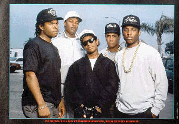

Westcoast Rap

So I don't listen to rap that much anymore, but I wanted to say a few words about
it. I didn't listen to hip-hop much in high school, having only vague recollections
of "Tricky", "Push It", and "It Takes Two." When I got down to college, someone
turned me on to Public Enemy, which changed my entire worldview. I started listening to
more rap and this is when I discovered NWA(N***** Wit Attitude). To me this
represented an even more radical worldview of survival on the streets. To me, previous
rappers had compromised their style by leaving out vulgar street slang. NWA didn't
give a f***. I was drawn to such matter of fact statements as "So you might as well
kiss your a** goodbye, cause in the long run, we all die" and "A dead b**** can't
tell a n***** s***." Frustrated with women, I found humor in such songs as, "A
B**** iz a B****" and "I Ain't Tha One." To me, this was the natural extension of the
Parliament-Funkadelic music and ideas that ran throughout their music. Bootsy's beautiful
"I'd Rather Be With You" transformed into NWA's "I'd Rather F*** You." I think this
pro-vulgarity stance was a combination of my feeling that it was more explicit and, thus,
more honest, and the threat of Tipper Gore and the PMRC that was widespread at the time.
I don't want to make it sound like I regret ever listening to it. I still feel
many of these rappers have/had something to say, Too $hort's
"Life is...Too $hort" to Ice Cube's "Check Yo Self" to Ice-T's "The Lethal Weapon's the
Mind" to 2Pac's "Brenda's Got a Baby". Ironically, I think
Westcoast rap owes it's initial popularity to vulgarity(especially the b-word) and yet
this is why I've given up on turning people on to the positive ideas in some of their songs.
I mean, even if Doggystyle had some crazy-positive message, what intelligent woman
is going to listen when there's degrading cartoons throughout the liner notes, not to
mention the proclamation that women ain't nothin'but b******? I always have listened with
a euphemistic ear, understanding the degradation as more of a call for self-respect
and allusion to the pimp game than honest degradation.
I guess none of this matters, as this style has now taken over a lot of the
chart topping hip-hop. I know I'm just a white guy from the 'burbs, but I wish
the rappers who have something to say wouldn't alienate large portions of their
audience by perpetuating excessive vulgarity. It may have been fresh and even
had some meaning initially, but to continue, to me seems ignorant.